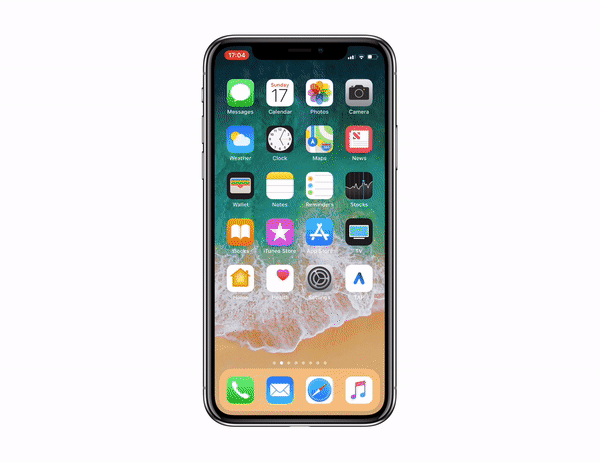

iPhone 12 и iPhone 12 Mini са редица смартфони проектирани, разработени и пуснати на пазара от Apple Inc. Те са четиринайсети поколение, "достъпни водещи" Iphones, наследявайки на iPhone 11. Те бяха представени на виртуално проведено специално събитие на Apple в Apple Park в Купертино, Калифорния на 13 октомври 2020 г., заедно с „премиум флагмана“ iPhone 12 Pro и iPhone 12 Pro Max. Предварителните поръчки за iPhone 12 започнаха на 16 октомври 2020 г., а телефонът стана наличен в повечето страни на 23 октомври 2020 г. Предварителните поръчки за iPhone 12 Mini започнаха на 6 ноември 2020 г., а телефонът стана наличен на ноември 13, 2020.

Основните подобрения спрямо iPhone 11 включват добавянето на Super Retina XDR OLED, за разлика от LCD IPS панела с LED подсветка Liquid Retina на iPhone 11 и XR, поддръжка на 5G , въвеждането на MagSafe , Apple A14 Bionic система на чип (SoC), видео Dolby Vision 4K с висок динамичен обхват до 30 кадъра в секунда и нов модел Mini. iPhone 12 и iPhone 12 Mini, подобно на iPhone 12 Pro и iPhone 12 Pro Max, са първите модели iPhone от Apple, които вече не включват захранващ адаптер или EarPods слушалки, намиращи се в предишни модели iPhone; обаче е включен кабел USB-C към Lightning ; и тази промяна беше приложена със задна дата към други модели iPhone, продавани от Apple, като iPhone XR , iPhone 11 и второто поколение iPhone SE . Съобщава се, че производството на iPhone 12 Mini е спряно на 21 юни 2021 г. поради по-ниски продажби в сравнение с други модели от гамата iPhone 12.
iPhone 12 и 12 Mini са първият основен редизайн след iPhone X. Той разполага с плоско шаси, базирано на iPhone 4 и последно срещано на първия iPhone SE и iPad Pros от 2018 г. и 4-то поколение iPad Air . Размерът на прореза е подобен на предишните модели iPhone, въпреки спекулациите за намаляване на ширината. Границите около дисплея са по-тънки с 35% от всеки предишен модел. Новият дизайн се предлага и с керамично закалено предно стъкло, предлагано на пазара като Ceramic Shield, докато задната част запазва усиленото стъкло от предишното поколение с двойна йонна обмяна. На 20 април 2021 г. на специалното събитие на Apple „Spring Loaded“, Apple разкри нова опция за лилав цвят, която стана достъпна на 30 април. iPhone 12 и 12 Mini се предлагат в шест цвята: черен, бял, продуктов червен , зелен, син и лилав.
Източник